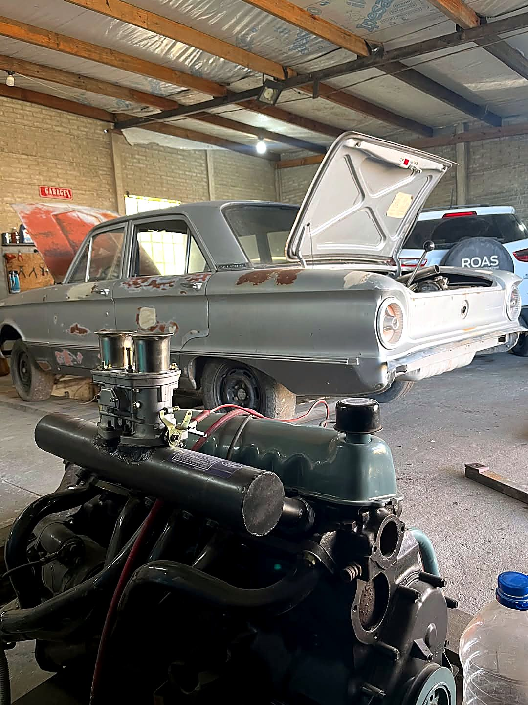
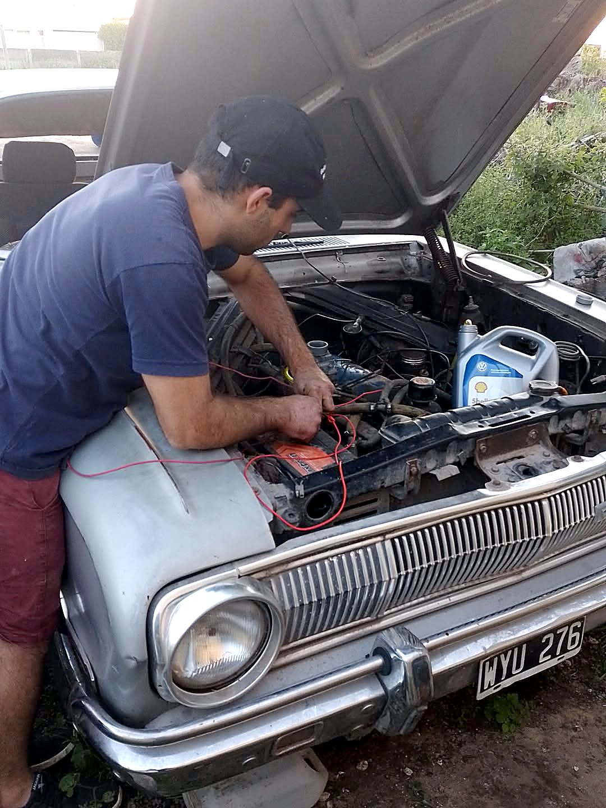
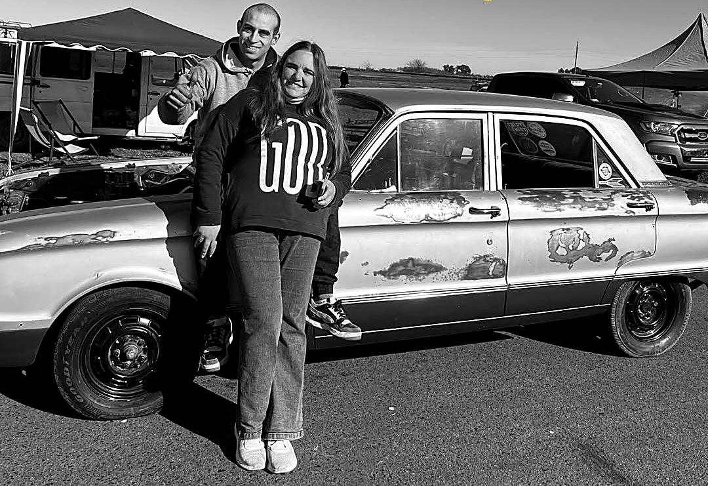

AC-Taller Mecánico
Mecánica con más de 11 años de experiencia, con foco en vehículos nuevos. Pide tu turno hoy.
5,0 en Google · 3 reseñas · Azul, Buenos Aires
Qué hacemos
Servicios de mecánica para tu vehículo. Cada trabajo empieza con un diagnóstico y te explicamos qué tiene antes de arreglarlo.
Precios: consúltanos.
¿Tu auto tiene una falla? Cuéntanos qué le pasa
Escríbenos ahoraMira nuestro canal
Mecánica paso a paso y el proyecto Falcon, en el canal de YouTube de AC Taller.
¿Llegamos a las picadas?
La primera tirada del Falcon y todo lo que salió mal. Mira el video y suscríbete al canal.
Suscríbete en YouTubeNuestro trabajo
Mecánica, motores y un proyecto propio: el Falcon. Pronto, fotos del taller nuevo.



Aprende mecánica
Además del taller, enseñamos mecánica: gratis en videos y en cursos presenciales.
Videos gratis
Reels de mecánica paso a paso en Instagram: cómo probar un alternador y más.
Ver InstagramPreguntas frecuentes
Respuestas provisorias: las confirma AC Taller antes de publicar.
¿Cómo saco un turno?
Con el botón «Pedir turno» de esta página. Se recomienda concertar cita.
¿Qué medios de pago aceptan?
Tarjetas de débito. Otros medios: a confirmar.
¿Cuáles son los horarios?
Atendemos de lunes a viernes, de 8 a 16 hs.
¿Dónde están?
A. Prat Nte. 0486, Azul, Provincia de Buenos Aires.
Contacto
Escríbenos o visítanos en el taller.
El mapa de Google se carga solo si lo pides.
Cómo llegar